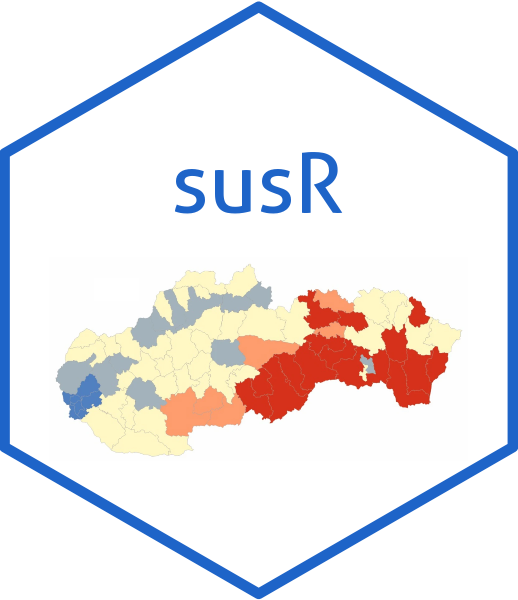

susR is an R package providing a convenient interface to the Slovak Statistical Office (SUSR) open data API. It simplifies tasks such as:
- Listing available tables.
- Retrieving dimension codes and values for a selected table(s).
- Fetching the data itself in a straightforward manner.
- Returning user-friendly tibbles ready for analysis.
This allows you to explore official Slovak statistical data directly within R, ensuring a reproducible and efficient workflow.
Installation
You can install the development version of susR from GitHub with:
devtools::install_github("Arnold-Kakas/susR")Example
This is a basic example illustrating how you might use susR to list available tables and fetch dimension values for a specific one.
library(susR)
# 1) Retrieve a list of all available tables
tables <- susr_tables()
head(tables)
#> # A tibble: ...
#> # class href table_code ...
#> # <chr> <chr> <chr> ...
#> # ...
# 2) Suppose we want the dimension values for the first table's first dimension:
# We'll pick a table code and a dimension code from the table info
table_code <- tables$table_code[1]
# E.g., "as1001rs" or something similar
dimension_code <- "as1001rs_rok" # Hypothetical dimension code
dim_values <- susr_dimension_values(table_code, dimension_code)
head(dim_values)
#> # A tibble: ...
#> # dimension_code dimension_label dimension_note element_index element_value element_label
#> # ...For more details on additional functions, usage examples, and how to retrieve the actual data, check out the package documentation and view the vignette.
For bugs or feature requests, please open an issue on the GitHub repo.
Happy analyzing with susR!